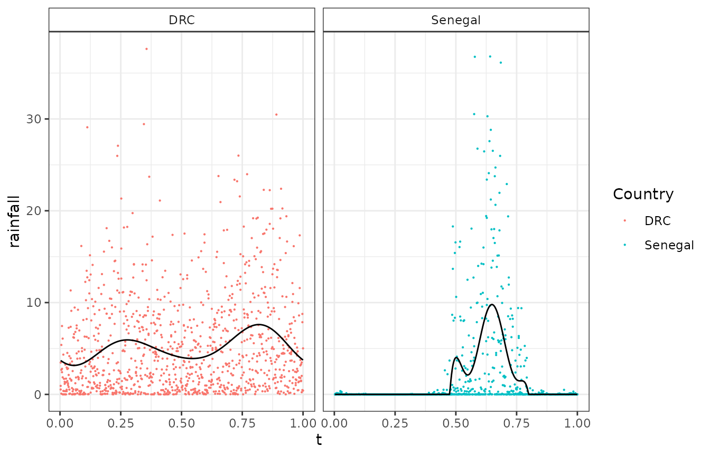
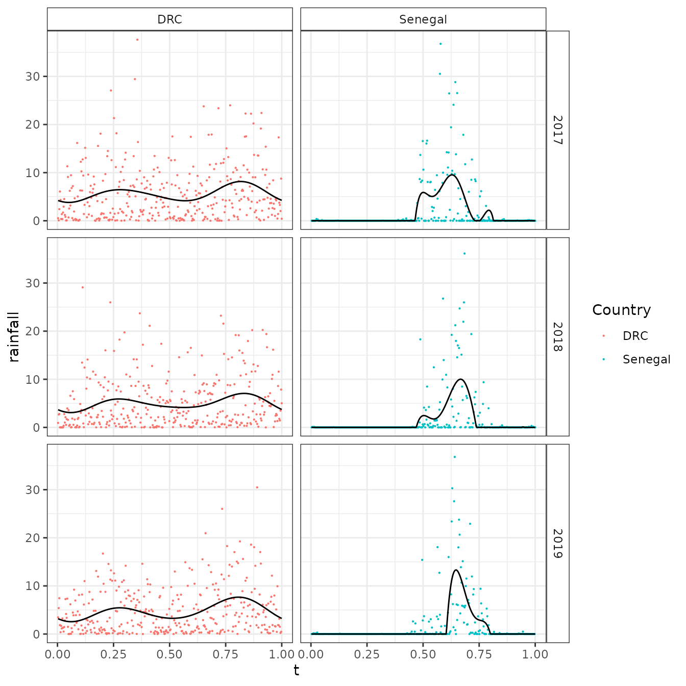

Fitting rainfall profiles
Fitting-rainfall-profiles.Rmd
library(umbrella)
library(sf)
#> Linking to GEOS 3.8.0, GDAL 3.0.4, PROJ 6.3.1; sf_use_s2() is TRUE
library(dplyr)
#>
#> Attaching package: 'dplyr'
#> The following objects are masked from 'package:stats':
#>
#> filter, lag
#> The following objects are masked from 'package:base':
#>
#> intersect, setdiff, setequal, union
library(tidyr)
library(ggplot2)Below is an example workflow for using the umbrella package to fit rainfall profiles for use in malariasimulation.
First we need a sf shape file to define the areas we want to capture rainfall for:
# Load an example sf file for two admin 1 units
spatial_data <- umbrella::example_admin_sfSpecify the start and end times of the period we are interested in
# Specify time-range
start_date <- "2017-01-01"
end_date <- "2019-12-31"And extract the data (We won’t do this here as it links to python and takes a little time)
# Extract
daily_rain_raw <- pull_daily_rainfall(sf = spatial_data, start_date = start_date, end_date = end_date)Instead we can load pre-extracted output
# Extract
daily_rain_raw <- umbrella::example_daily_rain_rawNext, let’s tidy up the raw output
# Process the raw data
daily_rain <- daily_rain_raw %>%
# Convert to long and format
pivot_longer(-c(ISO, Country, admin1),
names_to = "date",
values_to = "rainfall",
names_prefix = "X",
names_pattern = "(.*)_precipitation") %>%
mutate(date = as.Date(as.character(readr::parse_number(.data$date)), format = "%Y%m%d"),
year = lubridate::year(.data$date),
day_of_year = lubridate::yday(.data$date),
t = lubridate::yday(.data$date) / 365,
rainfall = as.numeric(rainfall)) %>%
# Replace missing data with 0
replace_na(replace = list(rainfall = 0)) %>%
# Remove any leap year addtional days
dplyr::filter(.data$day_of_year < 366)First we will fit a profile combining data from all three years:
rain <- daily_rain %>%
group_by(ISO, Country, admin1) %>%
summarise(
data = list(data.frame(date, day_of_year, t, rainfall)),
model = list(fit_fourier(data[[1]]$rainfall, data[[1]]$t)),
profile = list(fourier_predict(model[[1]]$coefficients, t = 1:365 / 365, floor = model[[1]]$floor))
)
#> `summarise()` has grouped output by 'ISO', 'Country'. You can override using
#> the `.groups` argument.
# Visualise output
rd <- rain %>%
select(ISO, Country, data) %>%
tidyr::unnest(cols = c("data"))
pf <- rain %>%
select(ISO, Country, profile) %>%
tidyr::unnest(cols = c("profile"))
ggplot() +
geom_point(data = rd, aes(x = t, y = rainfall, col = Country), alpha = 1, size = 0.1) +
geom_line(data = pf, aes(x = t, y = profile)) +
theme_bw() +
theme(strip.background = element_rect(fill = "white")) +
facet_grid( ~ Country)
If required we can fit each year individually:
rain2 <- daily_rain %>%
group_by(year, ISO, Country, admin1) %>%
summarise(
data = list(data.frame(date, day_of_year, t, rainfall)),
model = list(fit_fourier(data[[1]]$rainfall, data[[1]]$t)),
profile = list(fourier_predict(model[[1]]$coefficients, t = 1:365 / 365, floor = model[[1]]$floor))
)
#> `summarise()` has grouped output by 'year', 'ISO', 'Country'. You can override
#> using the `.groups` argument.
# Visualise output
rd2 <- rain2 %>%
select(year, ISO, Country, data) %>%
tidyr::unnest(cols = c("data"))
pf2 <- rain2 %>%
select(year, ISO, Country, profile) %>%
tidyr::unnest(cols = c("profile"))
ggplot() +
geom_point(data = rd2, aes(x = t, y = rainfall, col = Country), alpha = 1, size = 0.1) +
geom_line(data = pf2, aes(x = t, y = profile)) +
theme_bw() +
theme(strip.background = element_rect(fill = "white")) +
facet_grid(year ~ Country)